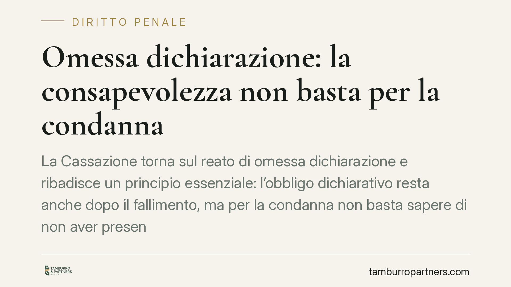

Omessa dichiarazione: la consapevolezza non basta per la condanna
La Cassazione torna sul reato di omessa dichiarazione e ribadisce un principio essenziale: l'obbligo dichiarativo resta anche dopo il fallimento, ma per la condanna non basta sapere di non aver presentato la dichiarazione. Occorre provare il dolo specifico, cioè la finalità di evadere le imposte. Una distinzione che incide direttamente sull'esito dei processi tributari penali.

Il caso in sintesi
Una recente pronuncia della Corte di Cassazione affronta la posizione di un'amministratrice di società chiamata a rispondere di omessa dichiarazione per periodi d'imposta la cui scadenza cadeva dopo la dichiarazione di fallimento.
La Suprema Corte conferma due principi distinti. Primo: l'obbligo di presentare la dichiarazione per i periodi gestiti grava sull'imprenditore anche quando il termine matura successivamente all'apertura della procedura concorsuale. Secondo, e qui sta il punto decisivo: la condanna è stata annullata perché il dolo specifico di evasione non può essere ricavato dalla sola consapevolezza di aver omesso l'adempimento.
Inquadramento normativo
Il riferimento è l'art. 5 del D.lgs. 74/2000, che punisce con la reclusione da due a cinque anni chi, al fine di evadere le imposte sui redditi o sul valore aggiunto, non presenta la dichiarazione annuale quando l'imposta evasa supera la soglia di 50.000 euro per singola imposta (soglia introdotta dalla riforma del 2015, D.lgs. 158/2015).
La norma contiene un elemento che il giudice non può trascurare: l'inciso "al fine di evadere". Si tratta di dolo specifico. Non è sufficiente che l'agente sappia di non aver presentato la dichiarazione (dolo generico); è necessario che quell'omissione sia sorretta da una precisa finalità evasiva. La differenza non è formale: cambia l'oggetto stesso della prova a carico dell'accusa.
Il "salto logico" censurato
Il nodo giuridico sta tutto nel passaggio dalla consapevolezza alla finalità. La Cassazione censura il ragionamento del giudice di merito che, dalla mera prova dell'omissione e della sua conoscenza da parte dell'imputata, aveva dedotto automaticamente la volontà di evadere.
È un salto logico. Sapere di non aver adempiuto e volerlo fare per sottrarsi al pagamento delle imposte sono due stati soggettivi diversi. Chi omette la dichiarazione può farlo per inerzia, per difficoltà organizzative legate alla crisi d'impresa, per disorganizzazione contabile sopravvenuta al dissesto. In un contesto di fallimento, dove la gestione ordinaria viene travolta, questa distinzione assume peso concreto.
La prova del fine evasivo deve poggiare su elementi ulteriori: condotte di occultamento, manovre sui flussi finanziari, comportamenti che rivelino la volontà di non far emergere la materia imponibile. In assenza di questi indici, la condanna resta priva di fondamento sull'elemento soggettivo.
Implicazioni pratiche
Per l'imprenditore e per l'amministratore di società, la pronuncia ha un duplice valore.
Sul piano dell'obbligo, conferma che la dichiarazione di fallimento non azzera gli adempimenti fiscali relativi alla gestione precedente: i termini che scadono dopo l'apertura della procedura vanno comunque rispettati per i periodi di competenza.
Sul piano della difesa, invece, chiarisce che l'accusa non può accontentarsi della prova oggettiva dell'omissione. Deve dimostrare il fine di evasione. Questo apre uno spazio difensivo rilevante, soprattutto quando l'omissione si colloca in una fase di crisi conclamata, dove la condotta può avere spiegazioni alternative alla volontà di sottrarsi al Fisco.
Cosa fare in concreto
- Verificare, in caso di fallimento, quali dichiarazioni relative alla gestione siano ancora dovute e quali termini risultino aperti o scaduti.
- Conservare ogni documentazione contabile e ogni traccia delle comunicazioni con il curatore e con l'Agenzia delle Entrate, utili a ricostruire la fase della crisi.
- Distinguere, nella valutazione del rischio penale, tra l'omissione in sé e la presenza di elementi che possano far emergere una finalità evasiva.
- Ricordare che la soglia di punibilità di 50.000 euro per singola imposta è un presupposto del reato: va sempre verificata l'imposta effettivamente evasa.
- È opportuno valutare l'assistenza di un difensore fin dalla fase delle indagini, quando la ricostruzione dell'elemento soggettivo è ancora in formazione.
Nota sul riferimento giurisprudenziale
Il principio qui illustrato riflette un orientamento consolidato sulla natura del dolo specifico nei reati dichiarativi. Gli estremi della singola pronuncia vanno verificati nelle banche dati ufficiali prima di qualsiasi utilizzo processuale.
Ogni condominio ha una storia a sé.
Se gestisci un'amministrazione e vuoi un confronto su una specifica questione condominiale, scrivi allo studio. Ti rispondiamo entro un giorno lavorativo.